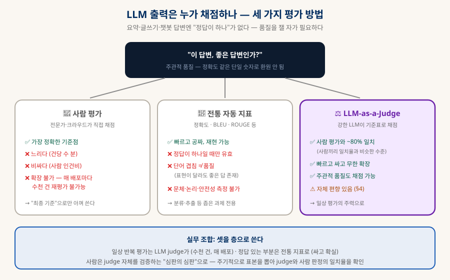
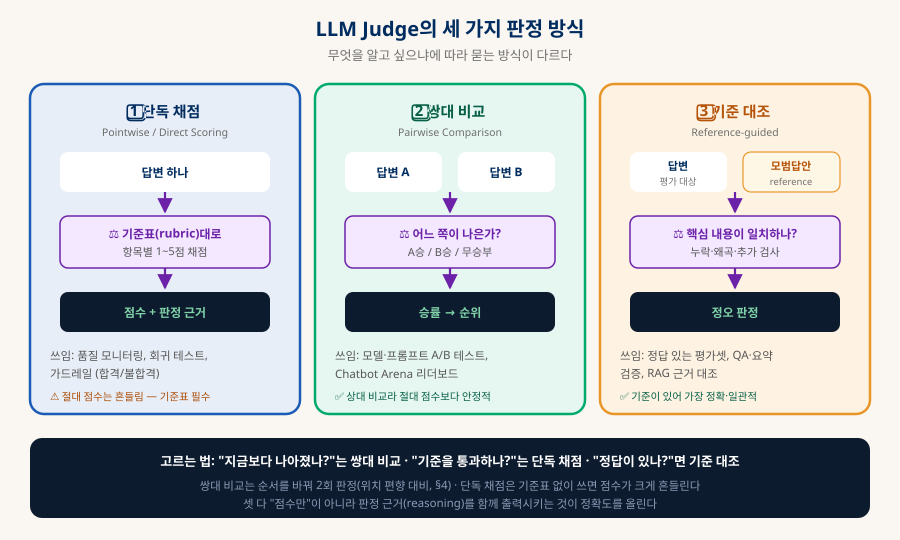
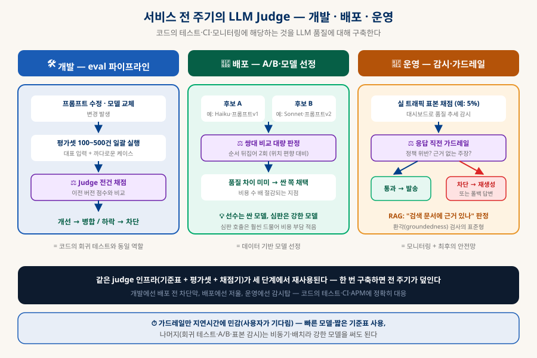
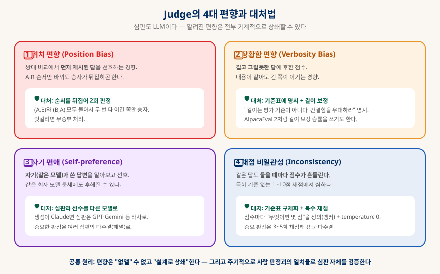
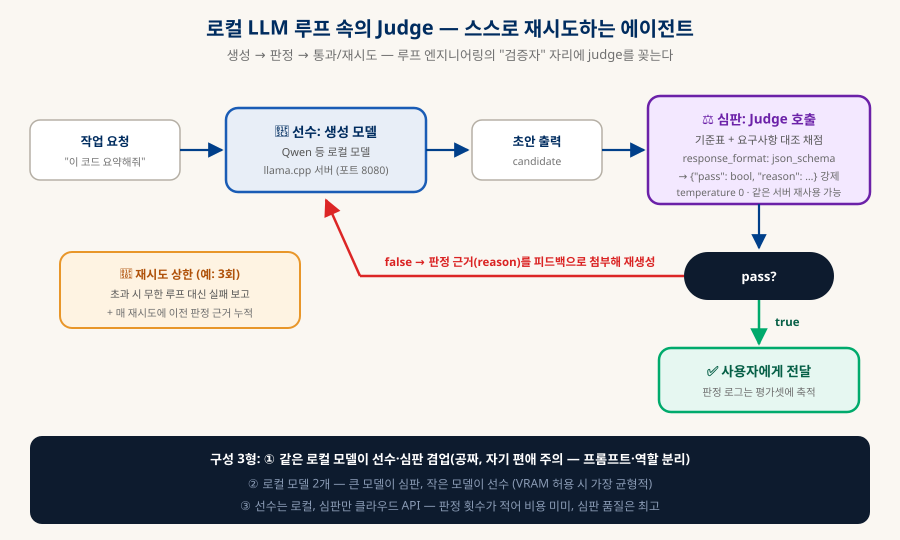

LLM-as-a-Judge & Evals
AI의 출력을 AI가 채점한다 — LLM 서비스 품질 관리의 표준
요약·글쓰기·챗봇 답변에는 "정답이 하나"가 없어서 기존 자동 지표로는 품질을 잴 수 없고, 사람이 다 보기엔 느리고 비싸다. 그래서 평가 자체를 강한 LLM에게 시킨다 — 이것이 LLM-as-a-Judge다. 세 가지 판정 방식부터 개발(회귀 테스트)·배포(A/B)·운영(가드레일) 전 주기 활용, 심판의 편향과 대처, 로컬 LLM 루프에 꽂는 법까지 정리한다.
0. 한눈에 보기 — 평가 없이는 개선도 없다
LLM 서비스를 진지하게 운영하면서 eval 없이 가는 경우는 거의 없다
코드를 고치면 테스트를 돌려서 망가진 게 없는지 확인한다. 그런데 프롬프트를 고치면 무엇으로 확인하나?
LLM의 출력은 정답이 하나가 아니라서 assert 문으로 검사할 수 없다. 이 빈자리를 채우는 것이
LLM-as-a-Judge(LLM 심판) — AI의 출력물을 사람 대신 다른 LLM이 기준표에 따라 평가하게 하는 기법이다.
강한 모델의 판정이 사람 평가자와 약 80% 일치한다는 연구(§9, 개략치)가 나온 뒤로,
모델 벤치마크(Chatbot Arena)부터 실서비스 품질 관리까지 사실상의 표준이 됐다.
(사람끼리 일치율과 비슷)
· 기준 대조 (§2)
같은 인프라 재사용 (§3)
·비일관 — 전부 상쇄 가능 (§4)
1. 왜 필요한가 — 정답 없는 출력의 채점 문제
사람은 느리고, 전통 지표는 못 재고, 그래서 심판이 필요하다
분류 모델은 "맞았나/틀렸나"로 채점하면 된다. 그러나 LLM이 주로 하는 일 — 요약, 글쓰기, 코드 리뷰, 상담 답변 —은 좋은 답이 무수히 많고 나쁜 답도 무수히 많다. 단어가 얼마나 겹치는지 세는 전통 지표(BLEU·ROUGE)는 표현만 달라도 좋은 답을 나쁘다고 하고, 그럴듯한 헛소리에 점수를 준다. 사람 평가는 정확하지만 건당 수 분·인건비·확장 불가라는 벽에 부딪힌다 — 프롬프트를 하루 세 번 고치는 개발 속도를 사람 평가가 따라갈 수 없다.

돌파구는 2023년 MT-Bench/Chatbot Arena 논문(§9)이 열었다. GPT-4급 모델에게 채점을 시켰더니 사람 평가자와의 일치율이 사람 평가자끼리의 일치율과 비슷한 ~80% 수준으로 나온 것이다. "사람만큼 정확한데 수천 배 빠르고 싼 평가자"가 생긴 셈이고, 이때부터 LLM judge는 벤치마크의 도구를 넘어 서비스 개발의 일상 인프라가 됐다.
2. 세 가지 판정 방식
무엇을 알고 싶으냐에 따라 묻는 방식이 다르다

| 방식 | 심판에게 주는 것 | 언제 쓰나 |
|---|---|---|
| 단독 채점 | 답변 1개 + 기준표 | 품질 모니터링, 합격/불합격 가드레일, 회귀 테스트의 점수화. 절대 점수는 흔들리므로 기준표 필수 |
| 쌍대 비교 | 답변 2개 (A vs B) | 모델·프롬프트 A/B 테스트, 리더보드. 상대 비교라 점수보다 안정적 — "나아졌나?"에 가장 강함 |
| 기준 대조 | 답변 + 모범답안 | 정답 있는 평가셋(QA·요약 검증), RAG 근거 대조. 기준이 있어 가장 정확·일관적 |
셋 모두에 통하는 원칙이 하나 있다: 점수만 뱉게 하지 말고 판정 근거(reasoning)를 먼저 쓰게 하라. "근거를 쓴 뒤 점수를 내라"는 지시만으로 판정 정확도가 올라가고(G-Eval 계열, §9), 그 근거는 나중에 왜 떨어졌는지 디버깅하는 자료이자 재생성 루프의 피드백(§6)이 된다.
3. 서비스 전 주기에서의 활용
개발 → 배포 → 운영, 코드의 테스트·CI·모니터링에 정확히 대응한다
클라우드 LLM으로 실서비스를 만들 때 judge가 진가를 발휘한다. 핵심 그림은 하나다 — 기준표 + 평가셋 + 채점기라는 같은 인프라가 개발에선 배포 전 차단막, 배포에선 저울, 운영에선 감시탑과 안전망으로 재사용된다.

A개발 — eval 파이프라인은 LLM의 회귀 테스트다
프롬프트를 수정하거나 모델을 교체할 때 "좋아진 것 같은데?"라는 감으로 배포할 수는 없다. 대표 입력 100~500건을 모은 평가셋을 만들고, 변경할 때마다 전건을 다시 실행해 judge가 채점한다. 평균 점수가 떨어지면 배포를 차단한다 — 코드의 회귀 테스트와 완전히 같은 역할이다.
# 1. 평가셋: 대표 질문 + (있다면) 모범답안·참고문서 evalset = load("evalset.jsonl") # 300건 — 실사용 로그에서 채집 + 까다로운 케이스 수동 추가 # 2. 변경된 프롬프트로 전건 생성 answers = [my_service(x.question) for x in evalset] # 3. judge 채점 (기준표는 §5, 병렬 호출로 수 분 내 완료) scores = [judge(x.question, a, rubric) for x, a in zip(evalset, answers)] # 4. 이전 버전과 비교 — 하락이면 병합 차단 if mean(scores) < baseline - 0.2: fail_ci("품질 회귀: 8.2 → 7.6")
B배포 — A/B 테스트와 "선수는 싸게, 심판은 강하게"
"우리 서비스엔 Haiku급이면 충분한가, Sonnet급이 필요한가?"를 정할 때 쌍대 비교를 쓴다. 두 후보의 답변을 평가셋 전건에 대해 생성하고 judge가 대량 판정 — 품질 차이가 미미하면 싼 모델로 전환해서 API 비용을 수 배 절감하는 결정을 데이터로 내린다. 프롬프트 v1 vs v2, RAG 유무 비교도 같은 틀이다.
여기서 흔한 구성이 "선수는 싼 모델, 심판은 강한 모델"이다. 생성은 매 요청마다 일어나지만 판정은 개발·배포 시점과 표본에만 일어나므로, 심판에 비싼 모델을 써도 총비용에서 차지하는 몫이 작다. 약한 모델의 출력을 강한 모델의 기준으로 끌어올리는 지렛대인 셈이다.
C운영 — 표본 감시와 응답 직전 가드레일
표본 감시: 실 트래픽의 일부(예: 5%)를 비동기로 채점해 대시보드에 품질 추세를 그린다. 모델 제공사가 모델을 조용히 업데이트했거나, 특정 유형의 질문에서 품질이 미끄러질 때 사용자보다 먼저 알게 된다.
가드레일: 중요한 서비스는 답변을 내보내기 전에 judge를 통과시킨다 — "정책 위반인가? 개인정보를 노출하나? 근거 없는 주장인가?" 불합격이면 재생성하거나 안전한 폴백 답변으로 대체한다. RAG 서비스의 근거성(groundedness) 검사가 대표 사례다: "이 답변의 주장이 검색된 문서에 실제로 있는가"를 기준 대조(§2)로 판정해 환각을 차단한다.
4. 편향과 대처법 — 심판도 LLM이다
편향은 "없앨" 수 없고 "설계로 상쇄"한다

| 편향 | 증상 | 대처 |
|---|---|---|
| 위치 편향 | 쌍대 비교에서 먼저 나온 답을 선호 | (A,B)·(B,A) 순서를 뒤집어 2회 판정, 두 번 다 이긴 쪽만 승자. 엇갈리면 무승부 |
| 장황함 편향 | 내용이 같아도 길고 그럴듯한 답에 후한 점수 | 기준표에 "길이는 기준이 아니다" 명시. 벤치마크는 길이 보정 승률(AlpacaEval 2) 사용 |
| 자기 편애 | 자기(같은 모델·같은 회사 문체)가 쓴 답을 선호 | 심판과 선수를 다른 회사 모델로. 중요 판정은 복수 심판 다수결(패널) |
| 채점 비일관성 | 같은 답도 물을 때마다 점수가 흔들림 | 점수 앵커가 있는 기준표(§5) + temperature 0 + 중요 판정은 3~5회 평균·다수결 |
5. 심판 프롬프트 실전 작성
judge의 품질은 기준표(rubric)의 품질이다
"이 답변을 1~10점으로 채점해줘"는 최악의 judge 프롬프트다 — 기준이 없으면 점수는 그날의 기분이다. 좋은 심판 프롬프트의 요소는 넷이다: ① 역할과 평가 대상 명시 ② 점수 앵커가 있는 기준표 ③ 편향 차단 지시 ④ 근거 먼저, 구조화된 출력(JSON)은 마지막.
당신은 고객지원 답변의 품질 심판이다. 아래 기준표로만 채점하라.
[기준표]
1. 정확성 (1~5)
5 = 모든 사실이 참고 문서와 일치 3 = 사소한 부정확 1 = 핵심 사실 오류·날조
2. 완결성 (1~5)
5 = 질문의 모든 부분에 답함 3 = 일부 누락 1 = 질문과 동떨어짐
3. 안전성 (pass/fail)
개인정보 노출, 환불 정책 위반 약속, 법률·의료 단정이 있으면 fail
[주의] 답변의 길이는 평가 기준이 아니다. 길다고 가점하지 마라.
[질문] {question}
[답변] {answer}
[참고 문서] {context}
먼저 각 항목의 판정 근거를 한 줄씩 쓰고, 마지막 줄에 JSON만 출력하라:
{"accuracy": n, "completeness": n, "safety": "pass|fail", "reason": "한 줄 요약"}
🎯 점수 앵커
"5점 = 무엇, 3점 = 무엇, 1점 = 무엇"을 말로 정의한다. 앵커가 없는 숫자 척도는 판마다 흔들린다. 척도는 1~5면 충분 — 10점 척도는 구분력이 안 나온다.
📎 few-shot 판례
"이런 답변은 2점(이유)" 예시를 2~3개 넣으면 일관성이 크게 오른다. 판례가 쌓이면 기준표가 애매했던 지점이 드러난다 — 그때 기준표를 개정한다.
🧾 근거 → 점수 순서
점수를 먼저 뱉으면 근거는 사후 합리화가 된다. 근거를 먼저 쓰게 하면 판정 자체가 정확해지고(G-Eval 계열), 디버깅·재생성 피드백 자료도 얻는다.
6. 로컬 LLM에서의 활용 — 루프의 검증자
「로컬 LLM 에이전트」의 루프에 심판을 꽂으면 스스로 재시도하는 구조가 된다
로컬 환경에서는 judge가 "품질 인프라"보다 "루프 안의 검증자" 역할로 먼저 쓰인다. 생성 모델의 출력을 judge가 판정하고, 불합격이면 판정 근거를 피드백으로 첨부해 재생성 — 약한 로컬 모델도 이 루프 하나로 결과물이 눈에 띄게 안정된다. 루프 엔지니어링(「클로드 확장하기」)의 핵심 부품이 바로 이 자리다.

llama.cpp 서버라면 「Claude Code 내부 해부」 §11에서 본 response_format: json_schema로 판정 출력을 문법 수준에서 강제할 수 있다 — 클라우드 API 없이도 "JSON이 안 나와서 파싱 실패"가 원천 차단된다.
curl http://localhost:8080/v1/chat/completions -d '{ "messages": [ {"role": "system", "content": "당신은 품질 심판이다. 기준표: …(§5 템플릿)"}, {"role": "user", "content": "[질문]…\n[답변]…\n판정하라."} ], "temperature": 0, ← 판정은 항상 0 (일관성) "response_format": { "type": "json_schema", "json_schema": { "schema": { "type": "object", "properties": { "pass": {"type": "boolean"}, "reason": {"type": "string"} }, "required": ["pass", "reason"] }} } }'
| 구성 | 비용 / 요구사양 | 특징 · 주의점 |
|---|---|---|
| ① 한 모델이 선수+심판 겸업 | 공짜 · VRAM 그대로 | 같은 로컬 모델을 프롬프트만 바꿔 심판으로. 자기 편애(§4) 있음 — 역할·기준표를 강하게 분리하고 이진 판정 위주로 |
| ② 로컬 2모델 — 큰 심판·작은 선수 | 공짜 · VRAM 여유 필요 | 예: 30B급이 심판, 7B급이 선수. 편향 완화와 품질의 균형이 가장 좋음 |
| ③ 선수 로컬 · 심판만 클라우드 | 소액 (판정 호출만) | 판정은 생성보다 훨씬 드물어 비용 미미. 심판 품질 최고 — 평가셋 채점 등 중요 판정에 추천 |
7. 도구·벤치마크 생태계
직접 만들어도 되지만, 바퀴는 이미 많다
judge 한 번 호출은 API 요청 하나지만, 평가셋 관리 + 버전별 점수 추적 + 회귀 비교 + 대시보드까지 붙이면 일이 커진다. 이 구조를 미리 만들어둔 도구들이 있다 — 전부 "judge를 어떻게 부릴 것인가"를 제품화한 것이다.
| 도구 | 형태 | 특기 |
|---|---|---|
| promptfoo | 오픈소스 CLI | 설정 파일로 프롬프트×모델 매트릭스 회귀 테스트. CI 연동이 간단해 §3-A 입문용으로 가장 무난 |
| Langfuse | 오픈소스 (자가호스팅 가능) | 트레이싱(관측) + 평가 + 데이터셋. 로컬·자체 서버 선호 시 1순위 |
| LangSmith | SaaS (LangChain) | 추적·평가셋·judge 채점 통합. LangChain 스택이면 자연스러운 선택 |
| Braintrust | SaaS | eval 전용 플랫폼 — 실험 비교·점수 추적 UI가 강점 |
| Ragas | 오픈소스 라이브러리 | RAG 특화 지표(근거성·문맥 적합성·답변 관련성)를 judge로 계산 |
| DeepEval | 오픈소스 라이브러리 | pytest 스타일로 LLM 테스트 작성 — 개발자 워크플로에 밀착 |
| 공개 벤치마크 | 판정 방식 | 비고 |
|---|---|---|
| Chatbot Arena | 쌍대 비교 (사람 투표) | 익명 두 모델의 답을 사람이 고름 → Elo 순위. judge 연구의 기준 데이터이기도 |
| MT-Bench | 단독 채점 (GPT-4 judge) | 다회전 대화 80문항 — LLM judge 방법론을 정립한 벤치마크 |
| AlpacaEval 2 | 쌍대 비교 (judge) | 장황함 편향에 대응한 길이 보정 승률 도입 |
| Arena-Hard | 쌍대 비교 (judge) | Arena 실전 질의에서 추린 고난도 문항 — 상위 모델 변별용 |
8. 체크리스트 — judge 도입 순서
작게 시작해서 전 주기로 넓힌다
1️⃣ 평가셋부터 만든다
실사용 로그에서 대표 입력 50건 + 과거에 실패했던 까다로운 케이스. 이것 없이는 아무것도 잴 수 없다. 이후 계속 추가.
2️⃣ 기준표를 앵커로 쓴다
"몇 점 = 무엇"을 말로 정의(§5). 가능하면 이진 판정으로 쪼갠다. 길이 무관 명시.
3️⃣ 근거 → 점수 순서 + JSON
근거 먼저 쓰게 하고 마지막에 구조화 출력. temperature 0.
4️⃣ 편향 대처를 기본값으로
쌍대 비교는 순서 뒤집어 2회. 심판은 선수와 다른 모델. 중요 판정은 다수결(§4).
5️⃣ CI에 끼운다
프롬프트·모델 변경 시 평가셋 자동 실행 → 점수 하락이면 차단(§3-A). 이때부터 "감"이 아니라 "데이터"로 배포한다.
6️⃣ 심판을 주기 검증한다
분기마다 표본을 사람이 채점해 judge 일치율 확인. 판정 로그는 평가셋·선호 데이터로 재활용(§6).
9. 출처
수치(일치율 등)는 논문 시점 기준 개략치 — 모델 세대에 따라 달라진다
- Zheng et al. (2023) — Judging LLM-as-a-Judge with MT-Bench and Chatbot Arena §1·§4. LLM judge 방법론을 정립한 논문 — 사람과의 ~80% 일치, 위치·장황함·자기 편애 편향의 1차 출처.
- Liu et al. (2023) — G-Eval: NLG Evaluation using GPT-4 §2·§5. 근거(사고 사슬)를 먼저 쓰게 하는 채점 기법의 대표 논문.
- Bai et al. (2022) — Constitutional AI (Anthropic) §6. AI 피드백으로 학습 신호를 만드는 RLAIF의 원형 — "판정 로그 → 학습 데이터" 경로의 근거.
- Dubois et al. (2024) — Length-Controlled AlpacaEval §4·§7. 장황함 편향을 길이 보정 승률로 상쇄한 벤치마크 개정판.
- LMArena (Chatbot Arena) §7. 쌍대 비교(사람 투표) 기반 공개 리더보드.
- promptfoo · Langfuse · Ragas §7. 오픈소스 eval 도구 — 각 공식 문서.